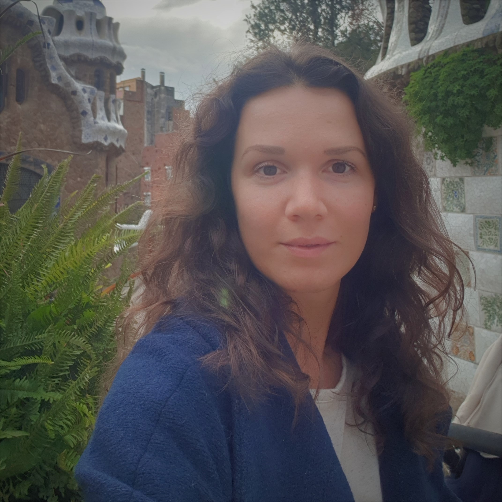

CV Palina Cetin

- Name, Surname: Palina Cetin
- Contact Info:
- Phone number: +905449464472
- Telegramm, Viber, Whatsapp: +905449464472
- E-mail: fpe@tut.by
- Summary: I would like to be an experienced web developer. I am willing to learn new programming languages and upgrade it all the time. As I already have one high education and working experience for construction company as an engineer for 10 years this is my next step in my working life. I am owner of good soft skills as an ability to achieve my targets.
- Skills: HTML5, CSS3, agile methodology, Photoshop
- Code examples: you can find it using this link CodeExample
- Experience: there are some projects from courses CodeExample1, CodeExample2
- Education: Codeacademy (LearnCSS, Introduction to HTML), ОЦ ПВТ (Development web sites: CSS and HTML), RSschool
- English: I have compleated language courses on Upperintermediate level (B2). I have been using language for my former job for about 3 years as well I continue to speak English with my family at home. I can study in english sites freely.